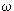

Массы атомных ядер представляют особый интерес для
идентификации новых ядер, понимания их структуры, предсказания распадных
характеристик: времени жизни, возможных каналов распада и др.
Впервые описание масс атомных ядер было дано Вейцзеккером на
основе капельной модели. Формула Вейцзеккера позволяет рассчитать массу атомного
ядра M(A,Z) и величину энергии связи ядра, если известно массовое число А и
число протонов Z в ядре.
Формула Вейцзеккера для масс ядер имеет следующий вид:
 |
(6.1) |
где mp = 938.28 Мэв/c2, mn = 939.57 Мэв/c2,
a1 = 15.75 Мэв, a2 = 17.8 Мэв, a3 = 0.71 Мэв, a4 = 23.7 Мэв,
a5 = 34 Мэв,
= {+1, 0, -1},
соответственно для нечетно-нечетных ядер, ядер с нечетным A, четно-четных ядер.
Первые два члена формулы представляют собой суммы масс
свободных протонов и нейтронов. Остальные члены описывают энергию связи ядра:
- a1A учитывает примерное постоянство удельной энергии связи ядра, т.е. отражает свойство насыщения ядерных сил;
- a2A2/3описывает поверхностную энергию и учитывает то обстоятельство, что поверхностные нуклоны в ядре связаны слабее;
- a3Z2/A1/3описывает уменьшение энергии связи ядра, обусловленное кулоновским взаимодействием протонов;
- a4(A - 2Z)2/A учитывает свойство зарядовой независимости ядерных сил и действие принципа Паули;
- a5A-3/4 учитывает эффекты спаривания.
Параметры a1 - a5, входящие в
формулу Вейцзеккера, подобраны таким образом, чтобы оптимально описать массы
ядер, вблизи области β-стабильности.
Однако уже с самого начала было ясно, что формула Вейцзеккера
не учитывает некоторые специфические детали структуры атомных ядер.
Так, в формуле Вейцзеккера предполагается однородное
распределение нуклонов в фазовом пространстве, т.е. по существу, пренебрегается
оболочечной структурой атомного ядра. На самом деле оболочечная структура
приводит к неоднородности в распределении нуклонов в ядре. Возникающая
анизотропия среднего поля в ядре ведет также к деформации ядер в основном
состоянии.
 Рис. 6.1. Разность масс между экспериментальными значениями и предсказаниями формулы Вейцзеккера для ядер с различным числом нейтронов |
Точность, с которой формула Вейцзеккера описывает массы
атомных ядер, можно оценить из рис. 6.1, на котором показана разность между
экспериментально измеренными массами атомных ядер и расчетами на основе формулы
Вейцзеккера. Величина отклонения доходит до 9 МэВ, что составляет около 1% от
полной энергии связи ядра. В то же время отчетливо видно, что эти отклонения
имеют систематический характер, что обусловленно оболочечной структурой атомных
ядер.
Отклонение энергии связи ядер от гладкой кривой,
предсказываемой моделью жидкой капли, явилось первым прямым указанием на
оболочечную структуру ядра. Различие в энергиях связи между четными и нечетными
ядрами указывает на наличие сил спаривания в атомных ядрах. Отклонение от
"гладкого" поведения величин энергий отделения двух нуклонов в ядрах между
заполненными оболочками служит указанием на деформацию атомных ядер в основном
состоянии.
Данные о массах атомных ядер лежат в основе проверки
различных моделей атомных ядер, поэтому большое значение имеет точность знания
масс ядер. Массы атомных ядер вычисляются с помощью различных феноменологических
или полуэмпирических моделей, использующих различные приближения
макроскопических и микроскопических теорий. Существующие в настоящее время
массовые формулы достаточно хорошо описывают массы (энергии связи) ядер вблизи
долины  -стабильности.
(Точность оценки энергии связи составляет ~ 100 кэВ). Однако для ядер, удаленных
от долины стабильности, неопределенность в предсказании энергии связи
увеличивается до нескольких МэВ. (рис. 6.2). На рис.6.2 можно найти ссылки на
работы, в которых приводятся и анализируются различные массовые формулы.
-стабильности.
(Точность оценки энергии связи составляет ~ 100 кэВ). Однако для ядер, удаленных
от долины стабильности, неопределенность в предсказании энергии связи
увеличивается до нескольких МэВ. (рис. 6.2). На рис.6.2 можно найти ссылки на
работы, в которых приводятся и анализируются различные массовые формулы.
 Рис. 6.2. Предсказания энергии связи различных массовых формул |
Сравнение предсказаний различных моделей с измеренными
массами ядер указывает на то, что предпочтение следует отдавать моделям,
базирующимся на микроскопическом описании, учитывающем оболочечную структуру
ядер. Необходимо также иметь в виду, что точность предсказания масс ядер в
феноменологических моделях часто определяется числом используемых в них
параметров [P.E. Hanstein Atomic and Nuclear Data Tables 39, 185, 1988].
Экспериментальные данные по массам атомных ядер приведены в обзоре [G. Audi,
A.H. Wapstra Nucl. Phys. A 595, 1995, p.409]. Кроме того, их постоянно
уточняемые значения можно найти в справочных материалах международной системы
баз данных.
За последние годы были развиты различные методы
экспериментального определения масс атомных ядер, имеющих малое время жизни.
Основные методы определения масс атомных ядер
Перечислим, не вдаваясь в детали, основные методы определения масс атомных ядер.
- Измерение энергии реакции Q
- Измерение энергии β-распада Qb является довольно распространенным методом определения масс ядер вдали от границы β-стабильности. Для определения неизвестной массы, испытывающего β-распада ядра A
MA + Ma = MB + Mb + Q/c2. |
(6.2) |
Если известны массы трех частиц, то масса четвертой частицы вычисляется по результатам измерения энергии реакции Q. В основном этот метод применим для легких ядер. С тяжелыми ядрами возникают проблемы, связанные с образованием конечных ядер в возбужденных состояниях с малой энергией возбуждения.
 ,
,
используется соотношение
MA = MB + me + Qb/c2.
(6.3)
Поэтому, зная массу конечного ядра B, можно получить массу начального ядра A. Бета-распад часто происходит на возбужденное состояние конечного ядра, что необходимо учитывать.
- Для
-радиоактивных ядер масса ядра определяется из данных по энергетическим спектрам
B +
MA = MB + Ma + Qa/c2. (6.4) Ta = Qa(MB/MA). (6.5)
Это соотношение написано для α-распадов из основного состояния исходного ядра в основное состояние конечного ядра. Энергии возбуждения могут быть легко учтены. Точности, с которыми по энергии распада определяются массы атомных ядер, составляют ~ 100 кэВ. Этот метод широко используется для определения масс сверхтяжелых ядер и их идентификации.
- Измерение масс атомных ядер методом времени пролета
Определение массы ядра (A ~ 100) с точностью ~ 100 кэВ эквивалентно относительной точности измерения массы ΔM/M ~10-6. Для достижения такой точности совместно с измерением времени пролета используют магнитный анализ. Такая методика используется в спектрометре SPEG - GANIL (рис.6.3) [L. Bianchi et al. Nucl. Instr. Meth. A276, 1989, p.509] и TOFI - Los Alamos [J.M. Wonters et al. Nucl. Instr. Meth. B26, 1987, p.286]. Магнитная жесткость Bρ, масса частицы m, ее скорость v и заряд q связаны соотношением
Bρ= mv/q.
(6.6)
Рис. 6.3 Спектрометр по времени пролета SPEG - GANIL на мезонной фабрике (LAMPF) в Лос АламосеТаким образом, зная магнитную жесткость спектрометра B
,можно определить m/q для частиц, имеющих одинаковую скорость. Этот метод позволяет определять массы ядер с точностью ~ 10-4. Точности измерений масс ядер можно повысить, если одновременно измерять время пролета. В этом случае масса иона определяется из соотношения
(6.7)

где L - пролетная база, TOF - время пролета. Пролетные базы составляют от нескольких метров до 103 метров и позволяют довести точность измерения масс ядер до 10-6.
Значительному повышению точности определения масс атомных ядер способствует также то обстоятельство, что массы различных ядер измеряются одновременно, в одном эксперименте, и точные значения масс отдельных ядер могут быть использованы как реперы. Метод не позволяет разделить основное и изомерное состояния атомных ядер. В GANIL создается установка с пролетной базой ~3.3 км, что позволит повысить точность измерения масс ядер до нескольких единиц на 10-7.
- Прямое определение масс ядер методом измерения циклотронной частоты
- Измерение масс атомных ядер в накопительном кольце
Этот метод использован на накопительном кольце ESR в GSI (Дармштадт, Германия) [H. Geissel et al. Phys. Rev. Lett 68, 1992, p.3412]. В методе используется детектор Шоттки, Он применим для определения масс ядер, имеющих время жизни > 1 мин. Метод измерения циклотронной частоты ионов в накопительном кольце используется в комбинации с предварительной сепарацией ионов на лету. На установке FRS-ESR в GSI (рис. 6.4) были выполнены прецизионные измерения масс большого числа ядер в широком диапазоне массовых чисел.

Рис. 6.4. Установка для измерения масс в GSI (Дармштадт)Ядра 209Bi, ускоренные до энергии 930 МэВ/нуклон, фокусировались на бериллиевой мишени толщиной 8 г/см2, расположенной на входе FRS. В результате фрагментации 209Bi образуется большое количество вторичных частиц в диапазоне от 209Bi до 1H. Продукты реакций сепарируются на лету по их магнитной жесткости. Толщина мишени подобрана так, чтобы расширить диапазон ядер, одновременно захватываемых магнитной системой. Расширение диапазона ядер происходит из-за того, что частицы, имеющие разные заряды, по-разному тормозятся в бериллиевой мишени. Фрагмент-сепаратор FRS настроен на прохождение частиц с магнитной жесткостью ~ 350 МэВ/нуклон. Через систему при выбранном диапазоне заряда детектируемых ядер (52 < Z < 83) могут одновременно проходить полностью ионизированные атомы (bare ions), водородоподобные (hydrogen-like) ионы, имеющие один электрон или гелиоподобные ионы (helium-like), имеющие два электрона. Так как скорость частиц при прохождении FRS практически не меняется, выделение частиц с одинаковой магнитной жесткостью селектирует частицы с значением M/Z с точностью ~ 2%. Поэтому частота обращения каждого иона в накопителе ESR определяется отношением M/Z. Это лежит в основе прецизионного метода измерения масс атомных ядер. Частота обращения ионов измеряется с помощью метода Шоттки (Schottky). Использование метода охлаждения ионов в накопительном кольце дополнительно повышает точность определения масс на порядок. На рис. 6.5 показан участок масс атомных ядер, разделенных с помощью этого метода в GSI. Следует иметь ввиду, что с помощью описанного метода могут идентифицироваться ядра, имеющие период полураспада больше 30 секунд, что определяется временем охлаждения пучка и временем анализа.

Рис. 6.5 Спектр масс с детектора Шоттки. Светлыми буквами показаны изотопы со впервые измеренными массами. Самый слабый пик образован всего ~5 ионамиНа рис. 6.6 показаны результаты определения массы изотопа 171Ta в различных зарядовых состояниях. При анализе использовались различные реперные изотопы. Измеренные величины сравниваются с данными таблицы (Wapstra).

Рис. 6.6. Результаты определения массы изотопа 171Ta в различных зарядовых состояниях и с использованием различных реперных изотопов - Измерение масс ядер с помощью ловушки Пеннинга (Penning trap)
Новые экспериментальные возможности для прецизионного измерения масс атомных ядер открываются в комбинации методов ISOL и ионных ловушек. Для ионов, имеющих очень маленькую кинетическую энергию и следовательно малый радиус вращения в сильном магнитном поле, используются ловушки Пеннинга [G. Bollen et al. Nucl. Instr. Meth. A368, 1996, p.675]. В основе этого метода лежит прецизионное измерение частоты вращения частицы
ω = B(q/m),
6.9
захваченной в сильное магнитное поле. Точность измерения массы для легких ионов может достигать ~ 10-9. На рис. 6.7 показан ISOLTRAP - спектрометр, установленный на сепараторе ISOL - CERN.
Основными элементами этой установки являются секции подготовки ионного пучка и две ловушки Пеннинга. Первая ловушка Пеннинга представляет собой цилиндр, помещенный в магнитное поле ~ 4 Т. Ионы в первой ловушке дополнительно охлаждаются за счет столкновений с буферным газом. На рис. 6.7 показано массовое распределение ионов с A = 138 в первой ловушке Пеннинга в зависимости от частоты вращения. После охлаждения и очистки ионное облако из первой ловушки инжектируется во вторую. Здесь происходит измерение массы иона по резонансной частоте вращения. Достижимое в этом методе разрешение для короткоживущих тяжелых изотопов наиболее высокое и составляет ~ 10-7. Рис. 6.7 Спектрометр ISOLTRAP
Рис. 6.7 Спектрометр ISOLTRAP
Для частицы, вращающейся в постоянном магнитном поле B, частота вращения  связана с ее массой и зарядом соотношением
B/ω = m/q. |
6.8 |
Несмотря на то, что методы 2 и 3 основаны на одном и том же соотношении, точность в методе 3 измерения циклотронной частоты выше (~ 10-7), т.к. он эквивалентен использованию пролетной базы большей длины.